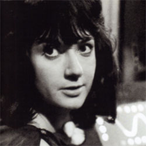

| Home | The Doctors | The Companions | The Villains |
|
|||
KatarinaKatarina (Adrienne Hill) was a companion of the First Doctor. She was a handmaiden of Cassandra in ancient Troy, and appeared first in The Myth Makers. During The Daleks' Master Plan, Katarina is captured by the prisoner Kirksen. She opens the airlock in which she and her captor are, which kills them both. |